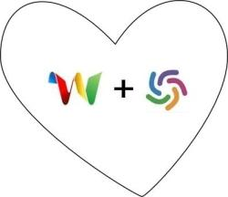

WorldCat-Bot welcomes you!

Hi! You've found the home of WorldCat-Bot, the bot for Google Wave that lets you share links to WorldCat searches.
The source code and more information is freely available
here
.